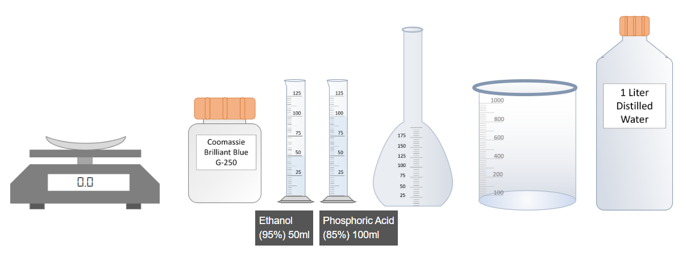
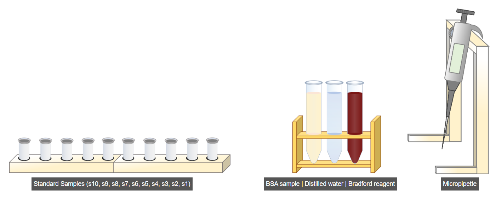
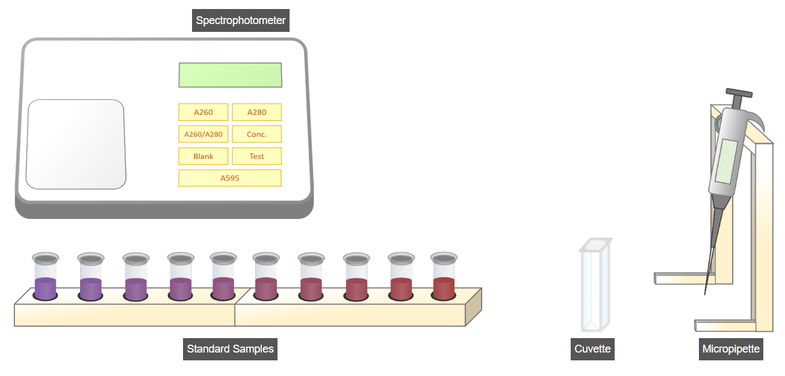
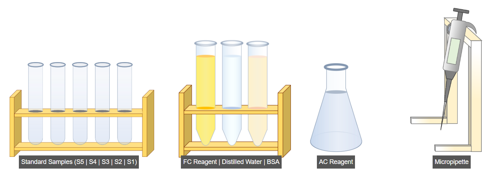
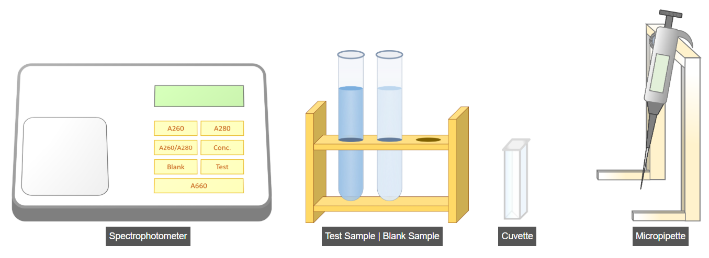
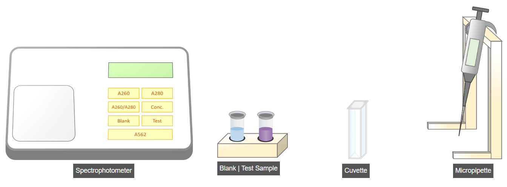
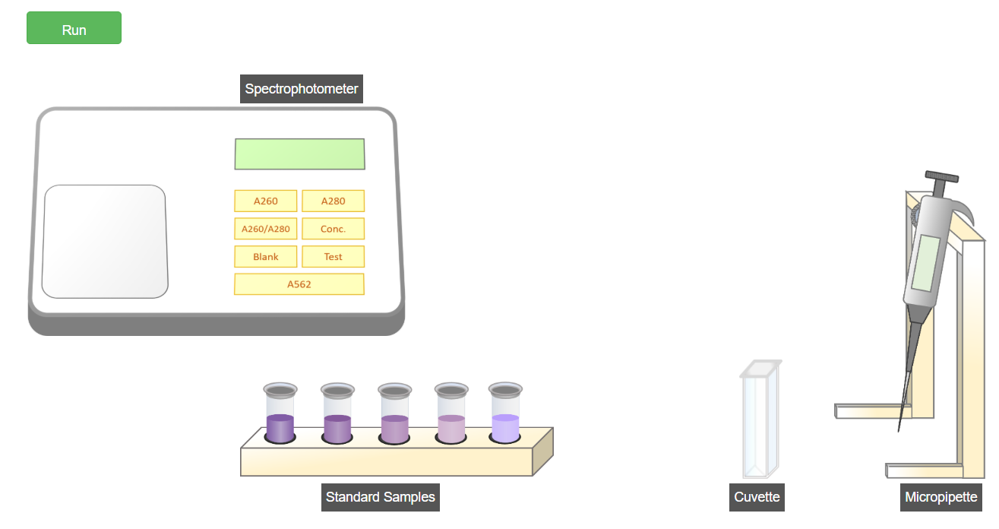

Experimental Procedures for Protein Estimation
1. Bradford Protein Assay

A. Preparation of Bradford Reagent
- Weigh 100 mg of Coomassie Brilliant Blue G-250 dye.
- Transfer the dye into a clean flask.
- Add 50 mL of ethanol to the flask.
- Add phosphoric acid to the same flask.
- Shake the flask thoroughly to dissolve the dye.
- Transfer the solution into a beaker.
- Add distilled water to make the final volume 1 L.
- Mix well. The Bradford reagent is now ready for use.

B. Preparation of Standard Samples
- Select the standard samples as per the given table.
- Set the micropipette to 50 µL and pipette the BSA sample.
- Set the micropipette to 450 µL and add distilled water.
- Set the micropipette to 2500 µL (2.5 mL) and add Bradford reagent.
- Click the Run option to prepare remaining standard samples automatically.

C. Measurement of Absorbance at 595 nm
- Transfer the blank sample into a cuvette using a micropipette.
- Insert the cuvette into the spectrophotometer.
- Set the instrument to Blank mode.
- Press A595 to record blank absorbance.
- Transfer the test sample into a cuvette.
- Insert the cuvette into the spectrophotometer.
- Set the instrument to Test mode.
- Press A595 to record test absorbance.

D. Measurement of Standard Samples
- Repeat the absorbance procedure for all standard samples at 595 nm using the Run button.
2. Lowry Protein Assay

A. Preparation of Standard Samples
- Set micropipette to 0.2 mL and add BSA solution.
- Click Run to prepare remaining BSA standards.
- Set micropipette to 0.8 mL and add distilled water.
- Click Run to complete water addition.
- Set micropipette to 4 mL and add AC reagent.
- Click Run to add AC reagent to all samples.
- Incubate for 10 minutes at room temperature.
- Set micropipette to 0.4 mL and add FC reagent.
- Click Run to add FC reagent.
- Incubate for 15 minutes at room temperature.
B. Measurement of Absorbance at 660 nm

Blank Sample
- Set micropipette to 1 mL.
- Transfer blank sample into a cuvette.
- Insert the cuvette into spectrophotometer.
- Set to Blank mode.
- Press A660 to record absorbance.
Test Sample
- Set micropipette to 1 mL.
- Transfer test sample into a cuvette.
- Insert the cuvette into spectrophotometer.
- Set to Test mode.
- Press A660 to record absorbance.

C. Measurement of Standard Samples
- Set micropipette to 1 mL.
- Click Run to measure all standard sample absorbance at 660 nm.
- Calculate the concentration of the test sample.
3. BCA Protein Assay

A. Preparation of Standard Samples
- Select the standard samples as per table.
- Set micropipette to 0.2 mL and add BSA sample.
- Set micropipette to 0.8 mL and add distilled water.
- Set micropipette to 2 mL and add BCA reagent.
- Click Run to prepare remaining standard samples.
B. Measurement of Absorbance at 562 nm

Blank Sample
- Transfer blank sample into a cuvette.
- Insert the cuvette into spectrophotometer.
- Set to Blank mode.
- Press A562 to record absorbance.
Test Sample
- Transfer test sample into a cuvette.
- Insert the cuvette into spectrophotometer.
- Set to Test mode.
- Press A562 to record absorbance.

C. Measurement of Standard Samples
- Repeat absorbance measurement for all standard samples at 562 nm using the Run button.
- Calculate the concentration of the unknown protein sample.